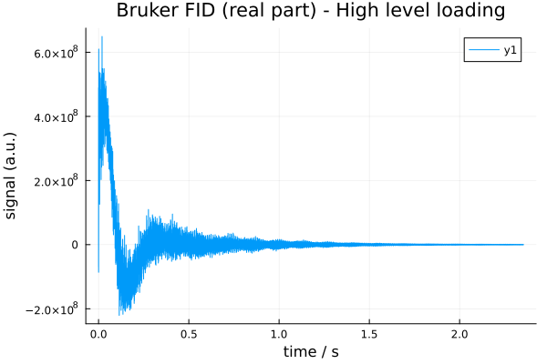
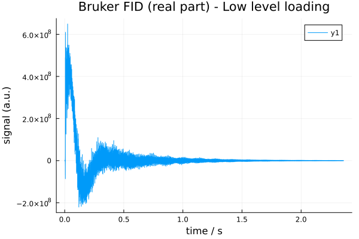
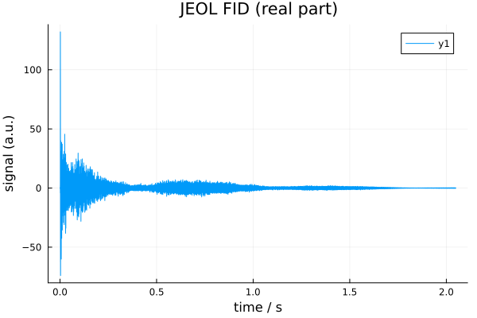

1. Loading NMR Data
NMRflux.jl provides: Low level, vendor specific readers in the submodule NMRflux.FileIO. These work directly with Bruker and JEOL file formats and return raw time domain arrays and parameter dictionaries. High level processing tools that operate on SpectData objects created from these raw arrays. For convenience, NMRflux.jl comes with example datasets that can be used in the documentation and in interactive sessions.
1.1 Example datasets
The example data are stored in the dictionary NMRflux.Examples.Data.
using NMRflux
using NMRflux.Examples
data_bruker = NMRflux.Examples.Data["HCC cell culture media spectra"]Dict{String, Any} with 9 entries:
"name" => "HCC cell culture media spectra"
"format" => "Bruker"
"author" => "Evie Rogers"
"files" => ["/Users/mu3q/Dropbox/Source/NMRflux.jl/src/../examples/2023…
"reference" => "unpublished"
"doi" => ""
"tags" => ["microfluidic NMR", "cells", "metabolomics"]
"description" => "^1H NMR experiments obtained from the supernatant of HCC ce…
"path" => "/Users/mu3q/Dropbox/Source/NMRflux.jl/src/../examples/2023-…using NMRflux
using NMRflux.Examples
data_joel = NMRflux.Examples.Data["Spheroid culture medium"]Dict{String, Any} with 9 entries:
"name" => "Spheroid culture medium"
"format" => "JEOL"
"author" => "Yaping Li, KIT"
"files" => ["/Users/mu3q/Dropbox/Source/NMRflux.jl/src/../examples/2025…
"reference" => "unpublished"
"doi" => ""
"tags" => ["microfluidic NMR", "cells", "metabolomics"]
"description" => "Initial experiments with culture of MCF-7 cells in the Utz\…
"path" => "/Users/mu3q/Dropbox/Source/NMRflux.jl/src/../examples/2025-…1.2 Bruker Data High-level (recommended)
For most use cases, Bruker data can be loaded via the high-level load function, which returns both the acquisition parameters and a time domain SpectData object:
data_bruker = NMRflux.Examples.Data["HCC cell culture media spectra"]
params_bruker, data_td_bruker = NMRflux.load(joinpath(data_bruker["path"], "10"), :Bruker)
(params_bruker["SW_h"], size(data_td_bruker))(13888.8888888889, (32693,))Here:
params_brukeris a dictionary of acquisition parameters parsed fromacqus.data_td_brukeris aSpectDataobject containing the time domain FID with an appropriate time axis.
Internally, NMRflux.load(path, :Bruker):
- Reads acqus and fid using
NMRflux.FileIO - Applies the Bruker group-delay correction using the parameter
GRPDLY - Constructs the time axis from the sweep width
SW_h.
This saves users from manually computing the dwell time and axis. The loaded FID can be inspected as:
using Plots: plot, savefig
t = data_td_bruker.coord[1]
y = real.(data_td_bruker.dat)
plot(t, y, xlabel = "time / s", ylabel = "signal (a.u.)", title = "Bruker FID (real part) - High level loading") # Plot the real part of the FID
savefig("bruker_fid_hl_plot.svg"); nothing # Save figure for Documenter
1.3 Bruker Data (Low-level FileIO)
Power users can work with the low-level Bruker readers in NMRflux.FileIO. These functions operate directly on the raw Bruker files (fid, acqus, etc.) and return:
- A complex FID as a Julia vector
- A dictionary of acquisition parameters
Using the same example dataset as above, we can read the FID as follows:
using NMRflux.FileIO
fid_bruker = NMRflux.FileIO.readBrukerFID(joinpath(data_bruker["path"], "10", "fid"))32768-element Vector{ComplexF64}:
131.203125 - 181.21875im
-496.359375 + 908.015625im
431.1171875 - 274.828125im
-706.625 + 1392.2265625im
1086.328125 - 1282.7421875im
-1474.546875 + 2338.7421875im
2038.015625 - 2740.5im
-2732.1015625 + 4055.1171875im
3593.5078125 - 5045.671875im
-4740.96875 + 6741.3984375im
⋮
-283007.765625 - 183694.90625im
-420138.875 + 79240.765625im
-175130.375 + 254453.578125im
-25309.578125 + 487678.984375im
0.0 + 0.0im
0.0 + 0.0im
0.0 + 0.0im
0.0 + 0.0im
0.0 + 0.0imThe fid_bruker is a Vector{ComplexF64} containing the complex time domain data points stored in the Bruker fid file. For older TopSpin 2.0 data, the FID is stored as 32-bit integers; in that case you can specify the format:
#fid_bruker_old = NMRflux.FileIO.readBrukerFID("fid"; format = Int32) # Example call for TopSpin 2.0 data
nothingThe acquisition parameters are stored in Bruker JCAMP-DX files such as acqus. We can read them using:
params_bruker = NMRflux.FileIO.readBrukerParameterFile(joinpath(data_bruker["path"], "10", "acqus"))Dict{String, Any} with 235 entries:
"O4" => 4323.3
"PCPD" => [0, 80, 0, 0, 0, 0, 0, 0, 0, 0]
"PLWMAX" => Real[137.28, 0, 0, 0, 0, 0, 0, 0]
"PQSCALE" => 1
"TE" => 298.0
"FQ5LIST" => "<>"
"RECPRE" => [-1, 0, -1, -1, -1, -1, -1, -1, -1, -1 … -1, -1, -1, -1, -1, …
"VPLIST" => "<>"
"VCLIST" => "<>"
"O7" => 4323.3
"FL3" => 0
"FQ6LIST" => "<>"
"SW_h" => 13888.9
"DATATYPE" => "Parameter Values"
"RSEL" => [0, 1, 0, 0, 0, 0, 0, 0, 0, 0 … 0, 0, 0, 0, 0, 0, 0, 0, 0, 0]
"CNST" => [1, 1, 1, 1, 1, 1, 1, 1, 1, 1 … 1, 1, 1, 1, 1, 1, 1, 1, 1, 1]
"USERA4" => "<>"
"YMAX_a" => 6.494e8
"SPOFFS" => [0, 0, 0, 0, 0, 0, 0, 0, 0, 0 … 0, 0, 0, 0, 0, 0, 0, 0, 0, 0]
⋮ => ⋮The params_bruker is a Dict{String,Any} in which:
- Numeric scalar values are automatically parsed as
Int64orFloat64 - Non-numeric scalars remain as
String - Array parameters (such as
D0,D1, etc) are returned as Julia vectors whose elements
are parsed in the same way (integer, float, or string)
Bruker array parameters such as D0, D1, etc are stored in a single vector params_bruker["D"]. Because Julia arrays are 1-based, D0 corresponds to index 1, D1 to index 2, and so on:
(params_bruker["D"][1], params_bruker["D"][2]) # D0, D1(0, 5)An important example is the sweep width in Hz, stored in the parameter SW_h. The dwell time (sampling interval) is its inverse, and can be used to construct a time axis:
dwell = 1 / params_bruker["SW_h"] # s per point
time_axis = (0:length(fid_bruker)-1) .* dwell # explicit time vector
(dwell, length(time_axis))(7.199999999999995e-5, 32768)The same example can be used to quickly inspect the loaded FID:
plot(time_axis, real(fid_bruker), xlabel = "time / s", ylabel = "signal (a.u.)", title = "Bruker FID (real part) - Low level loading") # Plot the real part of the FID
savefig("bruker_fid_plot.svg"); nothing # Save figure for Documenter
With the FID and time axis defined, a time domain SpectData object can be constructed as:
data_td_bruker = SpectData(fid_bruker, (time_axis,))32768-element SpectData{ComplexF64, 1} with coords:(0.0:7.199999999999995e-5:2.3592239999999984,):
131.203125 - 181.21875im
-496.359375 + 908.015625im
431.1171875 - 274.828125im
-706.625 + 1392.2265625im
1086.328125 - 1282.7421875im
-1474.546875 + 2338.7421875im
2038.015625 - 2740.5im
-2732.1015625 + 4055.1171875im
3593.5078125 - 5045.671875im
-4740.96875 + 6741.3984375im
⋮
-283007.765625 - 183694.90625im
-420138.875 + 79240.765625im
-175130.375 + 254453.578125im
-25309.578125 + 487678.984375im
0.0 + 0.0im
0.0 + 0.0im
0.0 + 0.0im
0.0 + 0.0im
0.0 + 0.0im1.4 JEOL Data High-level loading (recommended)
JEOL .jdf files contain acquisition parameters and binary data in a single file. JEOL datasets can be loaded using the unified high level loader NMRflux.load, which returns both the acquisition parameters and a time domain SpectData object. Most users can load JEOL data using:
using Plots
data_jeol = NMRflux.Examples.Data["Spheroid culture medium"]
jdf_file = joinpath(data_jeol["path"], "yp-5-fu-2.5-100.jdf")
params_jeol, data_td_jeol = NMRflux.load(jdf_file, :JEOL)
t_jeol = data_td_jeol.coord[1] # time axis (s)
y_jeol = real.(data_td_jeol.dat) # real part
plot(t_jeol, y_jeol;
xlabel = "time / s",
ylabel = "signal (a.u.)",
title = "JEOL FID (real part)")
savefig("jeol_fid_plot.svg"); nothing
The returned values are:
params_jeol::Dict{String,Any}. A dictionary of JEOL acquisition parameters where each entry is stored as a tuple (scaler, units, value)data_td_jeol::SpectData{ComplexF64,1}(orSpectData{ComplexF32,1}depending on the file). ASpectDataobject containing the reconstructed complex FID and its time axis
The high level loader performs all low level steps automatically:
- Reads the JEOL header and parameter blocks
- Reconstructs complex time domain data from the stored real/imaginary vectors
- Constructs the correct time axis from the digitization rate in
X_SWEEP - Returns a ready-to-use
SpectDatafor downstream processing
params_jeol, data_td_jeol = NMRflux.load(jdf_file, :JEOL)
(size(data_td_jeol), params_jeol["X_SWEEP"][3])((23072,), 11261.261261261263)1.5 JEOL data (low-level FileIO)
For advanced use, the low-level JEOL reader in NMRflux.FileIO provides direct access to all parts of the .jdf file:
header_jeol, params_jeol, data_jeol = NMRflux.FileIO.readJEOL(open(jdf_file))(Dict{String, Any}("listLength" => UInt32[0x00000000, 0x00000000, 0x00000000, 0x00000000, 0x00000000, 0x00000000, 0x00000000, 0x00000000], "baseFreq" => [600.17230460376, 0.0, 0.0, 0.0, 0.0, 0.0, 0.0, 0.0], "author" => "datum", "annotateLength" => 0x00000000, "contextLength" => 0x00006220, "dataAxisStop" => [2.0485271999999997, 0.0, 0.0, 0.0, 0.0, 0.0, 0.0, 0.0], "instrument" => "ECA", "dataPoints" => Int32[23072, 1, 1, 1, 1, 1, 1, 1], "totalSize" => 0x0000000000065440, "annotationOk" => true…), Dict{String, Any}("wgh_grad_2_amp" => (0, Tuple{String, String, Int8}[("Milli", "Tesla", 1), ("", "Meter", 15), ("", "None", 0), ("", "None", 0), ("", "None", 0)], 60.0), "sawtooth_range" => (0, Tuple{String, String, Int8}[("", "None", 0), ("", "None", 0), ("", "None", 0), ("", "None", 0), ("", "None", 0)], 4.0), "wgh_x_pulse" => (0, Tuple{String, String, Int8}[("Micro", "Second", 1), ("", "None", 0), ("", "None", 0), ("", "None", 0), ("", "None", 0)], 5.01804), "phase_6" => (0, Tuple{String, String, Int8}[("", "None", 0), ("", "None", 0), ("", "None", 0), ("", "None", 0), ("", "None", 0)], 180.0), "lowIndex" => 0x00000000, "changer_slot_position" => (0, Tuple{String, String, Int8}[("", "None", 0), ("", "None", 0), ("", "None", 0), ("", "None", 0), ("", "None", 0)], 0.0), "get_value_of_field" => (0, Tuple{String, String, Int8}[("", "None", 0), ("", "None", 0), ("", "None", 0), ("", "None", 0), ("", "None", 0)], "pulse_service::g"), "TOTAL_SCANS" => (0, Tuple{String, String, Int8}[("", "None", 0), ("", "None", 0), ("", "None", 0), ("", "None", 0), ("", "None", 0)], 64), "spin_status" => (0, Tuple{String, String, Int8}[("", "None", 0), ("", "None", 0), ("", "None", 0), ("", "None", 0), ("", "None", 0)], "SPIN ON "), "shim_x3z3" => (0, Tuple{String, String, Int8}[("", "Hertz", 1), ("", "None", 0), ("", "None", 0), ("", "None", 0), ("", "None", 0)], 47.300000000000004)…), [-2.1497944882665717e-7, -0.00013950422110987898, -0.0051844162649977935, -0.08807038729465194, -0.08907652978845076, -0.06816492160840142, -0.1196864118719773, 0.02066485740608047, -0.20010019956661748, 0.1504551844350158 … -0.24293406484935914, -0.06486871065502277, 0.1211813507594912, 0.20009470546198344, 0.27849253911458305, 0.14715037202527512, -0.012573650929477098, -0.15815274425485404, 0.0, 0.0])This function returns:
header_jeol: a dictionary with file-level metadata (axes, units, base frequencies, etc.)params_jeol: a dictionary of JEOL acquisition parameters where each entry is a (scaler, units, value) tupledata_jeol: a 1-D vector ofVector{Float32}orVector{Float64}containing the stored data (real part followed by imaginary part) with the layout:
[ Re1, Re2, Re3, ..., ReN, Im1, Im2, Im3, ..., ImN ]Some of the metadata fields available in the JEOL header include:
# header_jeol["dataAxisStart"]
# header_jeol["dataAxisStop"]
# header_jeol["dataPoints"]
# header_jeol["baseFreq"]
header_jeol["zeroPoint"]8-element Vector{Float64}:
0.2485325519999998
0.0
0.0
0.0
0.0
0.0
0.0
0.01.6 Reconstructing complex FID data
To reconstruct complex FID values, we split this vector into real and imaginary halves and combine them:
n = length(data_jeol)
cdata = data_jeol[1:n>>1] - im * data_jeol[n>>1+1:end]23072-element Vector{ComplexF64}:
-2.1497944882665717e-7 - 7.707002455031156e-6im
-0.00013950422110987898 - 0.00017234635428217768im
-0.0051844162649977935 - 0.05157299135423599im
-0.08807038729465194 - 0.21358801463142338im
-0.08907652978845076 + 0.1320968426880609im
-0.06816492160840142 - 0.2336285920028921im
-0.1196864118719773 + 0.25899468673315246im
0.02066485740608047 - 0.14237400938472022im
-0.20010019956661748 + 0.028457352931816903im
0.1504551844350158 + 0.4376629340060086im
⋮
0.2219324698160381 + 0.06486871065502277im
0.24239250519559702 - 0.1211813507594912im
0.0970754939400109 - 0.20009470546198344im
-0.08721091449889644 - 0.27849253911458305im
-0.1619749954867644 - 0.14715037202527512im
-0.15511019557983385 + 0.012573650929477098im
-0.1740184893274526 + 0.15815274425485404im
0.0 - 0.0im
0.0 - 0.0imThe cdata is now a complex vector containing the time domain JEOL FID.
1.7 Constructing a time axis
JEOL digitization information is stored in the X_SWEEP parameter. The sweep width is typically in the third element:
dwell = 1.0 / params_jeol["X_SWEEP"][3]
time_axis = range(0.0, step = dwell, length = length(cdata))0.0:8.879999999999999e-5:2.04870481.8 Constructing a SpectData object
data_td_jeol = SpectData(cdata, (time_axis,))23072-element SpectData{ComplexF64, 1} with coords:(0.0:8.879999999999999e-5:2.0487048,):
-2.1497944882665717e-7 - 7.707002455031156e-6im
-0.00013950422110987898 - 0.00017234635428217768im
-0.0051844162649977935 - 0.05157299135423599im
-0.08807038729465194 - 0.21358801463142338im
-0.08907652978845076 + 0.1320968426880609im
-0.06816492160840142 - 0.2336285920028921im
-0.1196864118719773 + 0.25899468673315246im
0.02066485740608047 - 0.14237400938472022im
-0.20010019956661748 + 0.028457352931816903im
0.1504551844350158 + 0.4376629340060086im
⋮
0.2219324698160381 + 0.06486871065502277im
0.24239250519559702 - 0.1211813507594912im
0.0970754939400109 - 0.20009470546198344im
-0.08721091449889644 - 0.27849253911458305im
-0.1619749954867644 - 0.14715037202527512im
-0.15511019557983385 + 0.012573650929477098im
-0.1740184893274526 + 0.15815274425485404im
0.0 - 0.0im
0.0 - 0.0imThe acquisition parameters (params_jeol) and header information (header_jeol) may be stored alongside the SpectData object to keep all metadata available for processing.